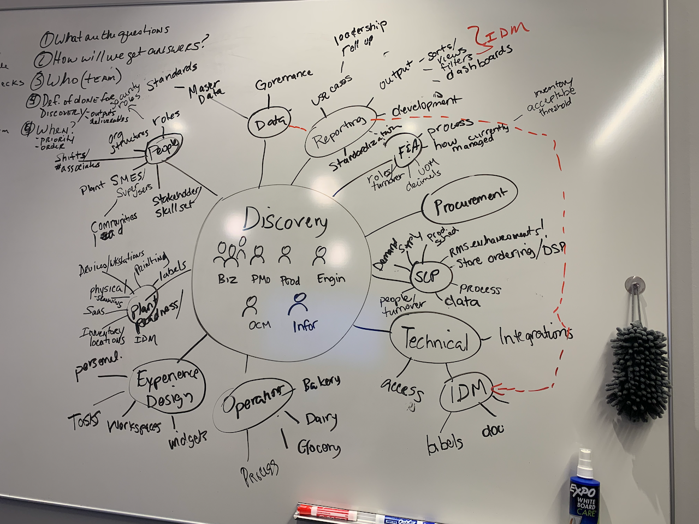
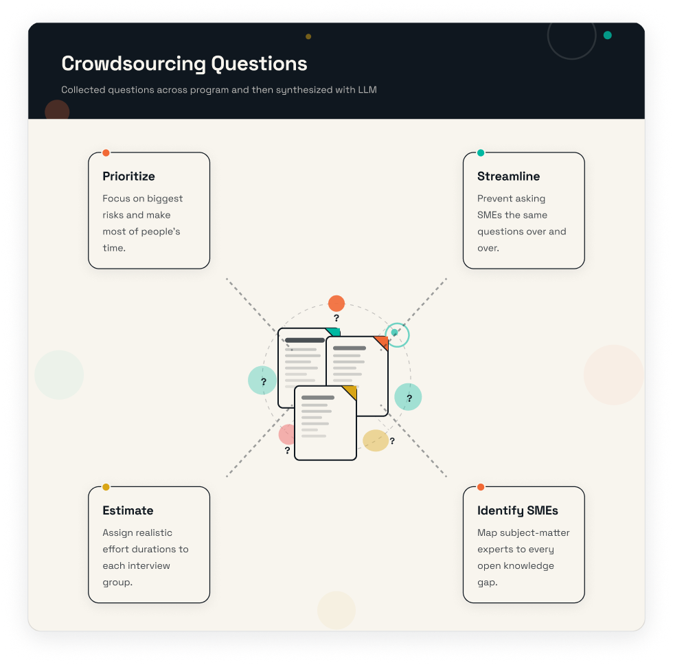

The problem
Project MAKE was moving 32 grocery, dairy, and bakery manufacturing facilities onto a modern, data- and AI-enabled operating model, with no standard documentation, process, or roadmap to build from. Every one of the 100+ workflows that ran those plants had to be discovered before it could be redesigned, and the stakes were high: nuanced requirements had to translate into decisions that scaled across every facility, not just the one where they were captured.
By the time the program reached Phase 2, the team had grown to 80+ people across product, engineering, data, infrastructure, and organizational change management, and Phase 1 had already exposed the cracks: requirements validation and interviews took months, then synthesis took weeks more before anyone could act on what was learned. Existing discovery playbooks weren't built for this scale, every tool had to be one enterprise IT had already approved, and coordination couldn't disrupt plant operations. Many of the interviewers were new to the work and needed coaching before they could run a session on their own.

Mapped which critical domains were the least understood and what unknowns were the riskiest for the program. From there program-level research questions were defined.
“Why are you asking me this all over again? I already answered this for somebody else on your team.” — Phase 1 research participant
What I did
As Senior Product Lead, I was responsible for managing all user research initiatives on the project and for building the infrastructure to support a team that had scaled to 80+ people.
- Got executive alignment on plan, resources, methodology, and outcomes
- Mapped stakeholder groups and identified associated risks
- Crowdsourced open questions from teams and synthesized them with an LLM to surface overlapping themes and identify the right SMEs
- Coached and onboarded inexperienced interviewers, including setting interview ground rules
- Built a repeatable playbook and knowledge management tool with interview guides, procedures, research report-outs, and communications
Artifact 1: AI and Workflow Automation
Document creation & naming
Transcript routing
Synthesis & findings
Artifact 2: Crowdsourced Questions

I led the development of the overall program-level research plan. To gather questions the team had about the risk domains identified by leadership, I created a SharePoint survey form for teams to complete, identifying who needed to be contacted, what questions were open, what processes needed to be observed or discussed, and what their research goals were.
I consolidated and synthesized the completed surveys using Copilot and mapped them to the risk areas. From there, I worked with the program leadership team (executive sponsor, program, product, vendor, engineering, OCM) to prioritize and streamline questions, estimate duration and time commitment for participants, and identify SMEs from both the program and the business.
Artifact 3: Discovery Knowledge Base
I developed a repository of interview guides, observation guides, checklists, FAQs, and troubleshooting guides that substantially reduced the prep time it takes to conduct interviews at this scale, resulting in a self-service model that interviewers could use with minimal onboarding.
Teams enjoyed discovery so much more this time around. What felt chaotic, disconnected, and unclear before now felt like a well-oiled machine. Rather than fighting nerves and logistics, they could listen deeply and learn quickly.— Fun fact
Outcome
Together, the two tracks turned a discovery problem with no starting material into a repeatable process: field discovery gave the program its first real map of how the plants actually worked, and the AI workflow gave product teams a way to gather and synthesize stakeholder input at a pace that matched the program's timeline instead of lagging behind it. The bigger shift wasn't just speed — product managers got their time back from administrative synthesis work and could focus on requirements that were both accurate and identified fast enough to matter.